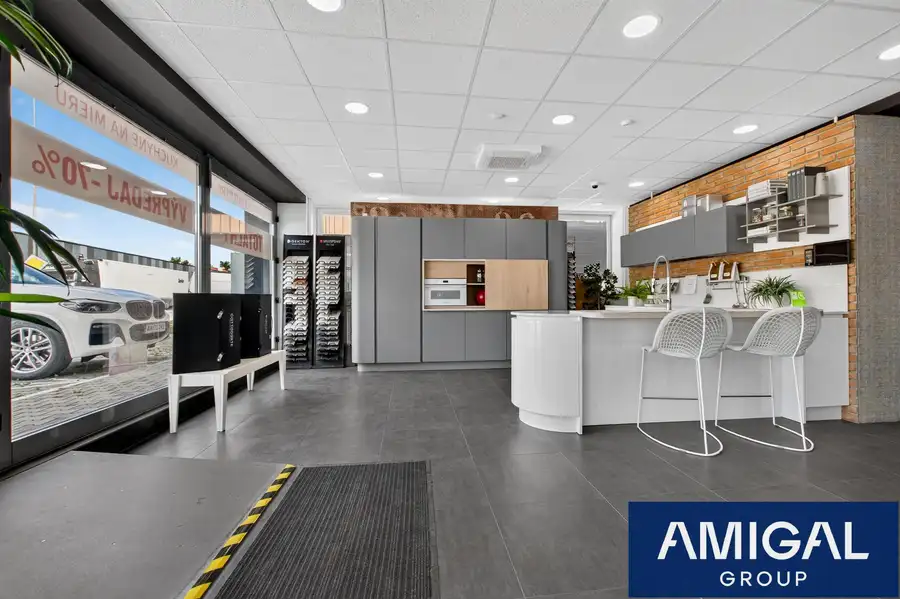
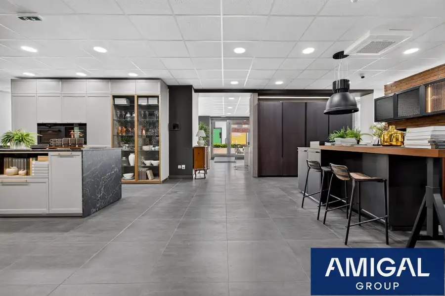
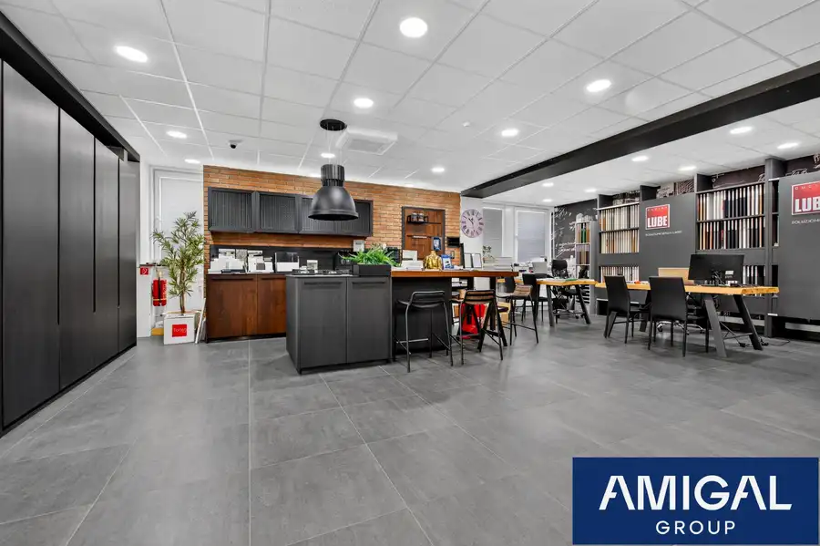
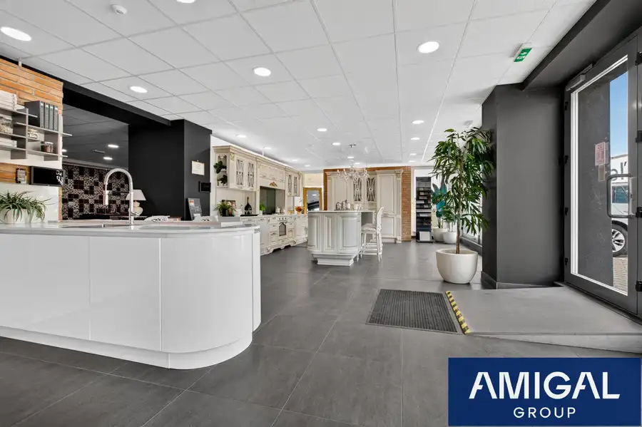
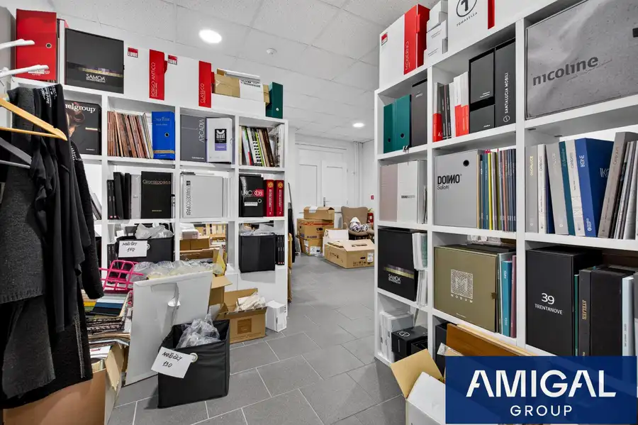
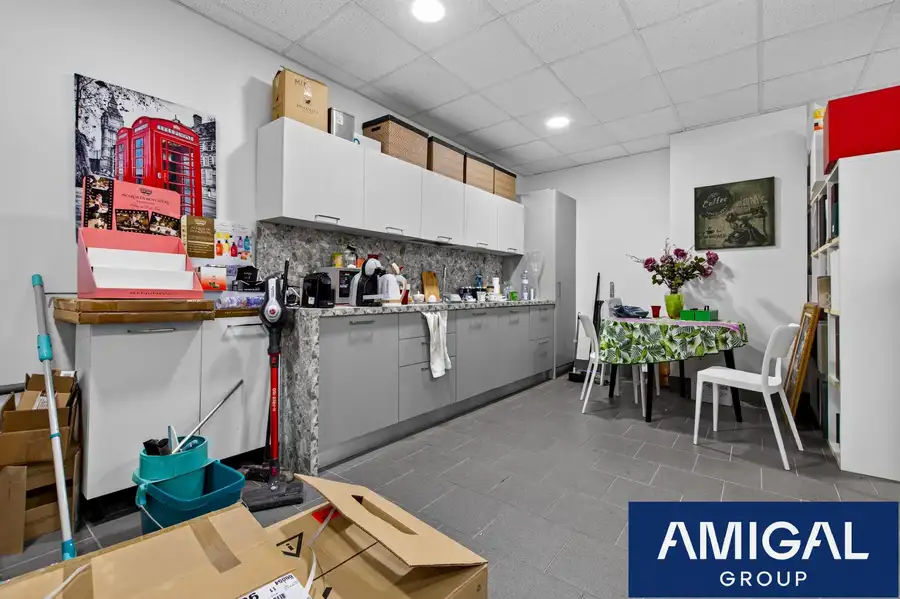
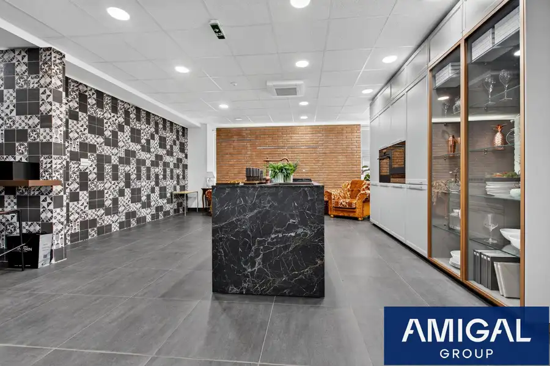

Prenájom obchodných priestorov v polyfunkčnom objekte aj s parkovaním - ihneď voľné
Ružinov, Bratislava








- Plocha238 m²
- StavKompletná rekonštrukcia
O nehnuteľnosti
Ponúkame na prenájom obchodný priestor s výmerou 238 m² v polyfunkčnom objekte My Bridge na Pestovateľskej ulici v Bratislave. Priestor je kompletne zrekonštruovaný, pripravený na okamžité využitie a disponuje veľkými výkladmi, ktoré zabezpečujú výbornú prezentáciu vašej značky, produktov alebo služieb.Vďaka strategickej polohe v obchodných zón Bratislavy ponúka priestor dostupnosť a viditeľnosť. Objekt sa nachádza oproti IKEA, v blízkosti obchodných centier AVION a KORZO, ako aj Letiska M. R. Štefánika. Priamy kontakt s privádzačom na diaľnicu D1 zabezpečuje jednoduchý prístup pre zákazníkov, obchodných partnerov aj zamestnancov.Priestor je vhodný pre showroom, maloobchodnú prevádzku, klientske centrum, služby, zdravotnícke zariadenie, vzorkovú predajňu alebo administratívno-obchodné využitie.PRENÁJOM PRIAMO OD MAJITEĽA – neplatíte žiadnu províziu.BENEFITY•Kompletná rekonštrukcia a moderný štandard •Veľké výklady s výbornou prezentáciou prevádzky •Možnosť parkovania priamo pred budovou •Vyhradené parkovacie státia pre nájomcov a návštevníkov •Výborná viditeľnosť z frekventovaných dopravných komunikácií •Priame napojenie na diaľnicu D1 •V blízkosti IKEA, AVION Shopping Park, KORZO a letiska •Nákladný výťah v budove •Kuchynka na podlaží •Oddelené toalety pre pánov, dámy a osoby so zníženou mobilitou •Moderný polyfunkčný objekt s profesionálnym zázemím LOKALITAPolyfunkčný objekt My Bridge sa nachádza na Pestovateľskej ulici v dynamicky sa rozvíjajúcej komerčnej zóne Bratislavy. Lokalita patrí medzi najvyhľadávanejšie obchodné a logistické uzly mesta vďaka bezprostrednej blízkosti obchodných centier, letiska a diaľničného napojenia.Významnou výhodou je vysoká dopravná frekvencia a výborná viditeľnosť budovy z hlavných dopravných ťahov smerujúcich k nákupným centrám, letisku a diaľnici D1. Táto poloha zabezpečuje jednoduchú dostupnosť z centra mesta aj z okolitých regiónov.CENA: 18eur/m² + energie + správcovské poplatkyKONTAKT Zuzana PavlikovskáSales+421 940 511 639pavlikovska@amigalgroup.sk
Parametre
- Druh
- Obchodné priestory
- Dátum zverejnenia
- 05. 06. 2026
- Energetický certifikát budovy
- nie je
- Stav nehnuteľnosti
- Kompletná rekonštrukcia
- Typ
- Prenájom
- Typ konštrukcie
- Zmiešaná
- Úžitková plocha
- 238 m²
Kde to je


Mohlo by Vás zaujímať
 Komerčné priestoryNové
1 316 €Amigal Group I Dvojkancelária so skladom v areáli Pestovateľská ulica v blízkosti Avionu
Ružinov, Bratislava
62.94 m²
Komerčné priestoryNové
1 316 €Amigal Group I Dvojkancelária so skladom v areáli Pestovateľská ulica v blízkosti Avionu
Ružinov, Bratislava
62.94 m²
 Komerčné priestoryNové
Cena na vyžádáníAmigal Group I Svetlý a moderný priestor vo Westend Tower ideálny pre väčšiu firmu
Karlova Ves, Bratislava
317.72 m²
Komerčné priestoryNové
Cena na vyžádáníAmigal Group I Svetlý a moderný priestor vo Westend Tower ideálny pre väčšiu firmu
Karlova Ves, Bratislava
317.72 m²
 Komerčné priestoryNové
Cena na vyžádáníAmigal Group I Menšia kancelária priamo v centre mesta na Michalskej ulici - ihneď voľná
Staré Mesto, Bratislava
25.92 m²
Komerčné priestoryNové
Cena na vyžádáníAmigal Group I Menšia kancelária priamo v centre mesta na Michalskej ulici - ihneď voľná
Staré Mesto, Bratislava
25.92 m²